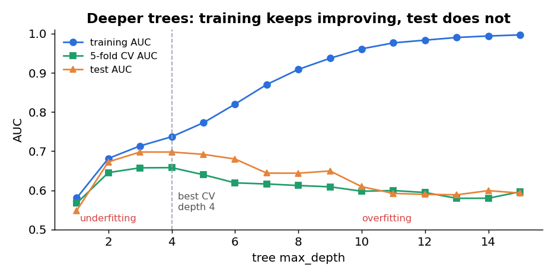
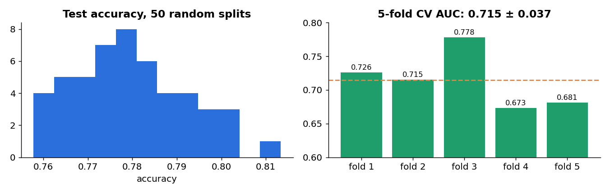
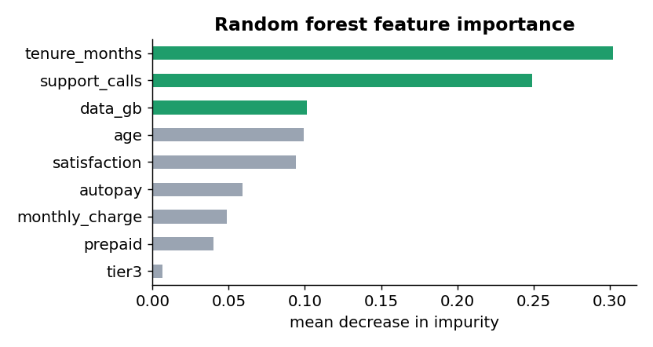
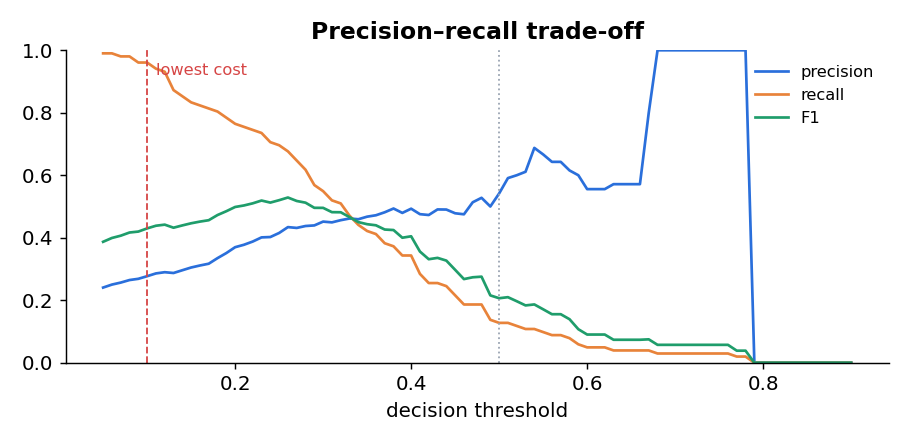
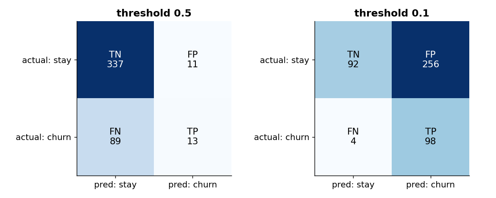
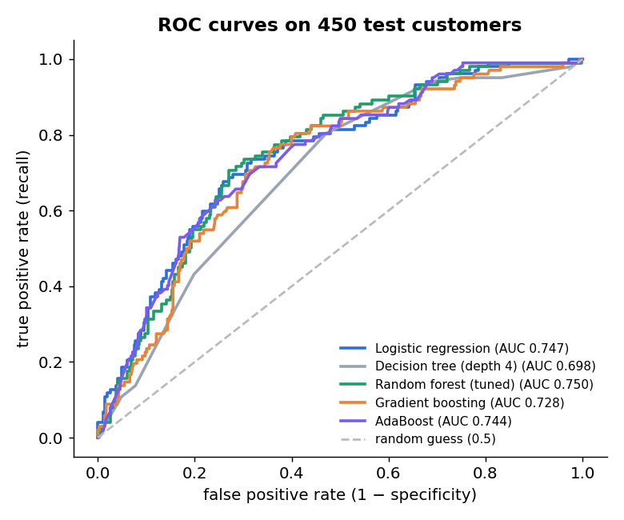

Overfitting and underfitting
A model’s job is to generalise: to work on customers it has never seen. It can fail in two opposite ways.
| Underfitting | Good fit | Overfitting | |
|---|---|---|---|
| Model is | too simple | just right | too complex |
| Error source | high bias: wrong assumptions | balanced | high variance: learns noise |
| Training score | low | good | very high |
| Test score | low | good (close to training) | much lower than training |
| SwiftTel tree | depth 1: AUC 0.58 / 0.55 | depth 3–4: CV AUC ≈ 0.66 | no limit: 1.00 / 0.58 |
depth train AUC CV AUC test AUC leaves
1 0.580 0.567 0.548 2
2 0.681 0.645 0.673 4
3 0.713 0.657 0.698 8
4 0.737 0.658 0.698 15
6 0.820 0.619 0.680 43
8 0.909 0.612 0.644 90
12 0.984 0.594 0.590 172
None 1.000 0.598 0.584 236

Cross-validation
A single train/test split gives one noisy number. We repeated the 70/30 split of SwiftTel with 50 different random seeds and retrained the same logistic regression each time:
50 random splits, logistic: accuracy 0.758-0.813 (mean 0.780, sd 0.013); AUC 0.680-0.781 (mean 0.730, sd 0.019)
So a model that scores 0.02 AUC higher on one split may not really be better: that is within the luck of which customers landed in the test set.
k-fold cross-validation
Fold AUCs: 0.726, 0.715, 0.778, 0.673, 0.681
mean = 3.573 / 5 = 0.715 · standard deviation = 0.037
Every customer is used for validation exactly once, and for training k − 1 = 4 times.

cv5 = StratifiedKFold(n_splits=5, shuffle=True, random_state=1) logit = make_pipeline(StandardScaler(), LogisticRegression(max_iter=5000)) # scaler is refit inside every fold folds = cross_val_score(logit, X_train, y_train, cv=cv5, scoring="roc_auc")
5-fold AUC: [0.726 0.715 0.778 0.673 0.681] mean 0.715 sd 0.037
| Strategy | How | Use when |
|---|---|---|
| Hold-out | one train/test split | very large data; final check |
| k-fold (k = 5 or 10) | k rotations, average the scores | the default for model selection |
| Stratified k-fold | each fold keeps the class proportions (22.7% churn) | classification, especially imbalanced |
| Leave-one-out (LOOCV) | k = n: train on all but one row, n times | very small data (it is slow) |
| Repeated k-fold | k-fold several times with different shuffles | small data; more stable estimates |
| Time-series split | train on earlier months, validate on later ones | forecasting; never train on the future |
| Nested CV | an inner CV for tuning inside an outer CV for scoring | an unbiased score for a tuned model |
Hyperparameter tuning
| Model | Parameters (learned) | Hyperparameters (you set them) |
|---|---|---|
| Logistic regression | coefficients b | C (regularisation strength), penalty L1/L2 |
| Decision tree | split features and thresholds | max_depth, min_samples_leaf, criterion |
| KNN | (none: stores data) | k, distance metric, weighting |
| Random forest | all the trees’ splits | n_estimators, max_depth, min_samples_leaf, max_features |
| Gradient boosting | all the trees’ splits | n_estimators, learning_rate, max_depth, subsample |
Grid search with cross-validation
grid = {"n_estimators": [100, 300], "max_depth": [3, 5, 8, None], "min_samples_leaf": [1, 5, 20]}
search = GridSearchCV(RandomForestClassifier(random_state=0), grid, cv=cv5, scoring="roc_auc").fit(X_train, y_train)
combinations: 24 models trained: 120
best: {'max_depth': 5, 'min_samples_leaf': 20, 'n_estimators': 100} CV AUC 0.692
What the search found: the best forests all have min_samples_leaf = 20 (leaves of at least 20 customers); the worst have leaf size 1 and no depth limit (0.661). Big leaves = less overfitting.
KNN validation curve (CV AUC by k): 1 → 0.567, 5 → 0.608, 15 → 0.647, 51 → 0.673, 101 → 0.674. Small k overfits badly.
Ensemble methods: why many models beat one
C(5,3)·0.7³·0.3² + C(5,4)·0.7⁴·0.3 + 0.7⁵ = 0.309 + 0.360 + 0.168 = 0.837With 25 such models: 0.983. The crowd beats every individual. But only if their mistakes are independent: 25 copies of the same model are no better than one.
| Bagging (random forest) | Boosting (AdaBoost, gradient boosting) | Stacking | |
|---|---|---|---|
| How models are built | in parallel, each on a bootstrap sample | in sequence, each fixing earlier errors | different model types, then a “meta” model combines them |
| Mainly reduces | variance (overfitting) | bias (underfitting) | both |
| Base models | deep trees | shallow trees (“weak learners”) | anything |
| Combine by | average / majority vote | weighted sum | a learned model |
| Risk | less interpretable, larger | can overfit with too many rounds | complex, leakage-prone |
Random forest
A random forest (Leo Breiman, 2001) grows many decision trees and lets them vote. Two kinds of randomness make the trees different from each other:
(1 − 1/n)ⁿ → 1/e ≈ 0.368So each tree sees about 63.2% of the distinct customers (some twice or more). The other 36.8% are its out-of-bag (OOB) rows: a free validation set. Our forest’s OOB accuracy: 0.779.

Reading importance carefully. Tenure and support calls lead, matching every earlier unit. But data_gb (0.10) and age (0.10) rank above autopay (0.06), although Unit 2’s tests found autopay strongly related to churn and data_gb barely related. Impurity-based importance is biased towards numeric features with many distinct values: they offer more possible split points, so they win some splits by chance. Unit 5 uses permutation importance, which avoids this.
Key hyperparameters: n_estimators (more trees = more stable, never overfits by itself, just slower), max_depth and min_samples_leaf (tree size), max_features (randomness per split).
Boosting
Boosting builds models one after another. Each new model concentrates on what the ensemble so far gets wrong.
α = ½ ln((1 − ε)/ε) = ½ ln(0.7/0.3) = 0.424Misclassified rows get their weight multiplied by eα = 1.53, correct rows by e−α = 0.65; then weights are normalised to sum to 1. The next learner is forced to focus on the hard cases. Final prediction = weighted vote, Σ α·hₜ(x).
F_m(x) = F_(m−1)(x) + η · tree_m(x)Small η (0.05) with many trees learns slowly but generalises better than big steps. XGBoost, LightGBM and CatBoost are fast, popular implementations.
GB staged test AUC at 1, 10, 50, 100, 150 trees: 0.673, 0.711, 0.738, 0.735, 0.728
Test AUC rises until about 50 trees, then slowly falls: adding rounds eventually fits noise. Early stopping watches a validation score and stops when it stops improving. Unlike random-forest trees, boosting rounds can overfit.
| Random forest | Gradient boosting | |
|---|---|---|
| Trees | deep, independent, parallel | shallow, dependent, sequential |
| More trees | never hurts (just slower) | can overfit → early stopping |
| Tuning effort | low: works well with defaults | higher: learning rate, depth, rounds interact |
| Typical accuracy | very good | often the best on tabular data |
Comparing models honestly
model CV AUC (train) test AUC Logistic regression 0.715 0.747 Decision tree (depth 4) 0.658 0.698 Random forest (tuned) 0.692 0.750 Gradient boosting 0.683 0.728 AdaBoost 0.698 0.744 random forest out-of-bag accuracy: 0.779 chosen by CV: Logistic regression
- Select by cross-validation, not by the test set. Logistic regression has the best CV AUC (0.715) and is chosen. The forest’s test AUC is 0.003 higher, but picking it for that would be tuning on the test set, and 0.003 is far below the split-to-split noise (sd 0.019).
- Ensembles are not magic. They shine when the pattern has complex interactions. SwiftTel’s churn behaves almost like a smooth weighted sum, so logistic regression is hard to beat, and it is easier to explain.
- Ensembles clearly beat a single tree (0.744–0.750 vs 0.698): averaging fixes a tree’s instability.
Evaluation metrics
The confusion matrix
For the chosen logistic model on the 450 test customers (102 churners) with a threshold of 0.25 (flag anyone with P(churn) ≥ 0.25):
Precision = TP / (TP + FP) = 71 / 171 = 0.415
Recall (sensitivity, TPR) = TP / (TP + FN) = 71 / 102 = 0.696
Specificity (TNR) = TN / (TN + FP) = 248 / 348 = 0.713
F1 = 2 × P × R / (P + R) = 2 × 0.415 × 0.696 / 1.111 = 0.520
| Metric | Question it answers | At 0.5 | At 0.25 |
|---|---|---|---|
| Accuracy | What share of all predictions are right? | 0.778 | 0.709 |
| Precision | Of those we flag, how many really churn? | 0.542 | 0.415 |
| Recall | Of real churners, how many do we catch? | 0.127 | 0.696 |
| Specificity | Of real stayers, how many do we leave alone? | 0.968 | 0.713 |
| F1 | Balance of precision and recall (harmonic mean) | 0.206 | 0.520 |
Lowering the threshold from 0.5 to 0.25 lowers accuracy but raises recall from 13% to 70%. That is the answer to Unit 3’s puzzle: with only 22.7% churners, accuracy rewards saying “No”, and a 0.5 threshold is far too strict for this business.

Choosing the threshold from business costs
cost = 2,800 × FN + 300 × FPThreshold 0.50: 2,800 × 89 + 300 × 11 = ₹2,52,500 · 0.25: 2,800 × 31 + 300 × 100 = ₹1,16,800 · 0.10: 2,800 × 4 + 300 × 256 = ₹88,000 (the lowest).
For comparison: call nobody = ₹2,85,600; call everyone = ₹1,04,400. Because a miss costs over 9× a false alarm, the best threshold is low.

Which metric when?
| Situation | Focus on | Example |
|---|---|---|
| Classes balanced, errors cost the same | accuracy | digit recognition |
| False alarms are costly | precision | spam filter (hiding real mail); blocking a card |
| Misses are costly | recall | cancer screening; fraud; churn with cheap calls |
| Need one balanced number for an imbalanced problem | F1 | comparing churn models at their best thresholds |
| Comparing models across all thresholds | ROC AUC (or PR AUC when positives are rare) | model selection |
| Numeric target | MAE, RMSE, R² | Unit 3 car prices |
class_weight="balanced" (errors on the rare class count more), resample the training data (undersample stayers or oversample churners, e.g. SMOTE), and judge with recall, F1 or PR AUC instead of accuracy. Resample only the training data, never the test set.The ROC curve and AUC
Every threshold gives one (FPR, TPR) pair. The ROC curve (Receiver Operating Characteristic) plots all of them:
- TPR (recall) = TP / (TP + FN), on the y-axis
- FPR = FP / (FP + TN) = 1 − specificity, on the x-axis
- Threshold 1 → (0, 0): flag nobody. Threshold 0 → (1, 1): flag everyone.
- Our points: 0.5 → (0.03, 0.13); 0.25 → (0.29, 0.70); 0.10 → (0.74, 0.96)

AUC is threshold-free, which makes it good for comparing models; you still need a threshold (Section 8) to make decisions. When positives are very rare (fraud at 0.1%), the precision–recall curve is more informative than ROC, because a tiny FPR can still mean thousands of false alarms.
Hands-on lab
Parts A–D run in this page on the real test-set scores and results. Part E is the full Python, R and SPSS lab.
Part A · Threshold lab: 450 real test customers
Part B · Overfitting explorer
Part C · Inside 5-fold cross-validation
1,050 training customers in 5 folds of 210. Press “Next round” to rotate the validation fold.
Part D · Bootstrap sampling
Your tasks
Check your answers
1. With ₹2,800 / ₹300 the lowest cost is ₹88,000 at a threshold of 0.10 (TP 98, FP 256, FN 4). With FP = ₹2,000, false alarms are now nearly as costly as misses, so the best threshold rises to 0.38 (lowest cost ₹2,57,200) and far fewer customers are flagged. The rule: the more a false alarm costs relative to a miss, the higher the threshold. 2. F1 peaks at about 0.26 (F1 = 0.529), well above the lowest-cost threshold (0.10). F1 treats precision and recall as equally important; the cost calculation uses what the errors really cost. Report the cost-based threshold, with F1 as a secondary measure. 3. At a threshold of 1 nobody is flagged, so TP = FP = 0 → (0, 0). At 0 everybody is flagged, so all churners are caught (TPR = 1) and all stayers are false alarms (FPR = 1) → (1, 1). Lowering the threshold can only add flags, so the curve never goes back. 4. Best CV AUC at depth 4 (0.658), with depth 3 almost equal (0.657). The gap grows with depth; the largest is with no depth limit (train 1.000 vs test 0.584). Depths 1–2 underfit: even their training AUC is low (0.58, 0.68). 5. Fold 3 is best (0.778), fold 4 worst (0.673): a spread of 0.10 from luck alone. The standard deviation (0.037) shows how much a single estimate could vary; two models whose means differ by less than that are not clearly different. 6. With n = 10 the average share of unique rows is around 65% and jumps around a lot (a small n gives 1 − (1 − 1/n)ⁿ ≈ 0.651); with n = 2000 it settles very close to 63.2% = 1 − 1/e. The roughly 36.8% of rows left out are the out-of-bag rows, used to validate that tree for free.
Part E · The full lab in Python, R and SPSS
SwiftTel (CSV)
swifttel_customers.csv
Jupyter notebook
7 steps: overfitting → ROC
Python script
python unit4_lab.py (≈ 1 min)
R script
CV, metrics, rpart, randomForest
SPSS · Lab Experiment 10: model evaluation
- Fit a Binary Logistic regression for churned (Experiment 7). Under Save, tick Predicted values → Probabilities: SPSS adds a column PRE_1.
- Classification table: in Options set the Classification cutoff to 0.5, then 0.25, and compare the tables (they are confusion matrices).
- ROC curve: Analyze → Classify → ROC Curve (ROC Analysis in newer versions). Test variable: PRE_1; state variable: churned, value of state = Yes. Tick “With diagonal reference line” and “Coordinate points”.
- Read the Area Under the Curve and use the coordinate points to pick a threshold.
- Repeat with a decision tree (Experiment 8, save predicted probabilities) and compare the two ROC curves and AUCs.
class_weight="balanced" in the logistic regression. Compare its confusion matrix at 0.5 with the original model at 0.25. Are they similar? Explain why reweighting the classes and moving the threshold have a similar effect.Summary and revision
| Topic | Remember this |
|---|---|
| Over/underfitting | Underfit = high bias (both scores low); overfit = high variance (train ≫ test); tree depth 4 best by CV |
| Cross-validation | k folds, each used once for validation; mean ± sd (0.715 ± 0.037); stratified; time-series split; preprocessing inside folds |
| Tuning | Hyperparameters set before training; grid search 24 × 5 = 120 fits; random search for big grids; never tune on the test set |
| Ensembles | Independent voters beat individuals (5 × 70% → 83.7%); bagging cuts variance, boosting cuts bias |
| Random forest | Bootstrap rows (63.2% unique, 36.8% OOB) + √p random features per split; impurity importance biased to numeric features |
| Boosting | AdaBoost α = ½ ln((1−ε)/ε), reweight errors; gradient boosting fits residuals with a learning rate; early stopping |
| Metrics | Precision TP/(TP+FP), recall TP/(TP+FN), specificity TN/(TN+FP), F1 = 2PR/(P+R); accuracy misleads on imbalanced data |
| Threshold | Choose from costs: ₹88,000 at 0.10 vs ₹2,52,500 at 0.5; higher false-alarm cost → higher threshold |
| ROC/AUC | TPR vs FPR over all thresholds; AUC = P(random positive ranked above random negative); 0.747 here |